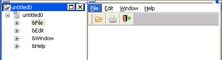

Previous Next
Using inheritance to build a menu
When you build a menu that inherits its style, events, functions,
structures, variables, and scripts from an existing menu, you save
coding time. All you have to do is modify the descendent object
to meet the requirements of the current situation.
 To use inheritance to build a descendent menu:
To use inheritance to build a descendent menu:
Click the Inherit button on the PowerBar.
In the Inherit From Object dialog box, select
Menus from the Object Type drop-down list, the library or libraries
you want to look in, and the menu you want to use to create the
descendant, and click OK.
 Displaying menus from many libraries To find a menu more easily, you can select more than one library
in the Application Libraries list. Use Ctrl+Click to toggle
selected libraries and Shift+Click to select a range.
Displaying menus from many libraries To find a menu more easily, you can select more than one library
in the Application Libraries list. Use Ctrl+Click to toggle
selected libraries and Shift+Click to select a range.
The selected menu displays in the WYSIWYG Menu view and the
Tree Menu view in the Menu painter. The title in the painter's
title bar indicates that the menu is a descendant.
Make the changes you want to the descendent menu
as described in the next section.
Save the menu under a new name.
Using the inherited information
When you build and save a menu, PowerBuilder treats the menu
as a unit that includes:
- All menu items and
their scripts
- Any variables, functions, and structures declared
for the menu
When you use inheritance to build a menu, everything in the
ancestor menu is inherited in all of its descendants.
What you can do
You can do the following in a descendent menu:
- Add menu items to
the end of a menu
- Insert menu items in a menu (with some restrictions)
For more information, see "Where you can insert menu
items in a descendent menu".
- Modify existing menu items
For example, you can change the text displayed for a menu
item or change its initial appearance, such as making it disabled
or invisible.
- Build scripts for menu items that do not have scripts
in the ancestor menu
- Extend or override inherited scripts
- Declare functions, structures, and variables for
the menu
What you cannot do
You cannot do the following in a descendent menu:
- Change the order of
inherited menu items
- Delete an inherited menu item
- Insert menu items between inherited menu items that
do not have the ShiftToRight property set (see "Modifying the ShiftToRight
property")
- Change the name of an inherited menu item
- Change the type of an inherited menu item
Hiding a menu item If you do not need a menu item in a descendent menu, you can
hide it by clearing the visible property in the Properties view
or by using the Hide function.
About menu item names in a descendant
PowerBuilder uses the following syntax to show names of inherited
menu items:
AncestorMenuName::MenuItemName
For example, in a menu inherited from m_update_file,
you see m_update_file::m_file for
the m_file menu item, which is defined
in m_update_file.
The inherited menu item name is also locked, so you cannot
change it.
Understanding inheritance
The issues concerning inheritance with menus are similar to
the issues concerning inheritance with windows and user objects.
For information, see Chapter 13, "Understanding Inheritance ."
Inserting menu items in a descendent menu
Modifying the ShiftToRight
property
When defining a descendent menu, you might want to insert
menu items in the middle of the menu bar or in the middle of a drop-down
or cascading menu. To do this, you set the ShiftToRight property
in a menu item's Properties view on the General property
page.
If the ancestor menu has no menu items with ShiftToRight set,
you can add a new menu item to the end of the descendent menu. To
add new menu items elsewhere in the menu, set the ShiftToRight property
for the descendent menu items that will follow the new menu item.
The ShiftToRight property is used for menu items on the menu
bar (where items need to shift right if a new item is inserted)
and for menu items in a drop-down or cascading menu (where
items might need to shift down if a new item
is inserted). The property name is ShiftToRight, but it means shift
down in drop-down or cascading menus.
Where you set the ShiftToRight property
You set the ShiftToRight property in an ancestor menu only
if you know that you will always want a group of menu items to shift
right (or down) when you inherit from the menu and add a new menu
item. For example, if you have File, Edit, Window, and Help menus
on the menu bar, set the ShiftToRight property for the Window and
Help menu items if you are going to inherit from this menu, because
Window and Help are usually the last items on a menu bar.
Where you can insert menu
items in a descendent menu
In a descendent menu, a group of menu items can be one of
four types. Each type has an insertion rule.
Table 14-7: Insertion rules for groups of menu items
| Type of group |
Insertion rule |
|---|
| Inherited menu items without ShiftToRight
set |
You cannot insert a new menu item before any
of these menu items |
| Inherited menu items with ShiftToRight
set in ancestor |
You can insert before the first menu
item in the group but not before the others |
| New items without ShiftToRight set |
You can insert a new menu item before
any of these menu items |
| New items with ShiftToRight set |
You can insert a new menu item before
any of these menu items |
The "Example with no ShiftToRight
in ancestor" and
the "Example with ShiftToRight
in ancestor" demonstrate
some of these rules.
How to insert menu items in a descendent menu
If you can insert a menu item in a descendent menu, the Insert
Menu Item option on the Insert menu and the pop-up menu
is enabled. The Insert Menu Item is enabled if ShiftToRight is set
in the selected item that will follow the item you are inserting
and all menu items following it.
To insert a menu item in a descendant, you use the same method
you use to insert an item in a new menu, whether the menu item is
on the menu bar or on a drop-down or cascading menu. For information
about inserting menu items, see "Working with menu items".
The following examples illustrate where you can insert menu
items in a descendent menu and demonstrate the rules that govern
where you can insert them.
Example with no ShiftToRight
in ancestor
Suppose you have a menu with File, Edit, Window, and Help
items on the menu bar. The menu is inherited from an ancestor frame
menu with no items set as ShiftToRight in the ancestor.

Here is how you might add some new menu items. Since ShiftToRight
is not set anywhere at first, you can add a menu item only to the
end.
- Select any item in
the menu bar and select Insert>Menu Item At End.
- Name the new menu item New1 and press Enter.
The New1 menu item is added to the right of the Help menu.
Now add a new Menu item before the New1 menu item. You can
do this without setting ShiftToRight on New1, because New1 is a
new menu item in the inherited menu.
- Select Insert Menu Item from the pop-up menu for
New1.
- Name the new menu item New2 and press Enter.
Now add a new Menu item before the Help menu item. You cannot
do this unless you set ShiftToRight on the Help menu item, the New2
Menu item, and the New1 menu item, because Help is an inherited
menu item without ShiftToRight set in the ancestor menu. For Help
to shift right, New2 and New1 must also be able to shift right.
- Select the Help menu item and in the Properties
view, select the ShiftToRight property, and then do the same for
New1 and New2.
Order for setting ShiftToRight for the three menu items You can set ShiftToRight in any order, but you see the items
shifting only if you set ShiftToRight from left to right.
Now you can add a new menu item before the Help menu item.
- Select the Help menu item, then select Insert New
Item from the pop-up menu, name the new item New3, and then press
Enter.
If you want to add a new Menu item before the New3 menu item,
you can do it without setting ShiftToRight on New3, because New3
is a new menu item and ShiftToRight is set in all items that follow.
However, if you want to add a new menu item before the Window
menu item, you cannot do this by working only in the descendent
menu because the Window menu item is an ancestor menu item and ShiftToRight
is not set in the ancestor. To be able to do this, you must set
Window as ShiftToRight in the ancestor.
Example with ShiftToRight
in ancestor
In this example, the inherited menu has the same four menu
bar items, but ShiftToRight has been set in the Window and Help
menu items in the ancestor menu. Suppose you want to insert a new
menu item before the Help menu item and the Window menu item.
- Select the Help menu
item and display the pop-up menu.
The Insert Menu Item option is disabled because the Help item is
not the first item in a group of ancestor menu items
(Window and Help) with ShiftToRight set in the ancestor.
- Select the Window menu item and display the pop-up
menu.
The Insert Menu Item option is enabled because the Window
item is the first item in a group of ancestor
menu items with ShiftToRight set in the ancestor.
- Select Insert Menu Item At End from the pop-up menu
to insert a new menu item after Help, name it New1, and press Enter.
The New1 item's ShiftToRight property is set automatically.
Now the Window, Help, and New1 items are set ShiftToRight.
You can insert a new item before Window and New1, but not before
Help. This is because the Window and Help menu items are a group
for which ShiftToRight is set in the ancestor.
You cannot insert a new item before the Edit menu item because
Edit is in a group (File and Edit) that are inherited items with
no ShiftToRight set in the ancestor.
- Select the Edit menu item, select ShiftToRight in
the Properties view, and then add a new menu item.
You could also have set the ShiftToRight property in the ancestor
menu, but it is easier to work just in the descendant.